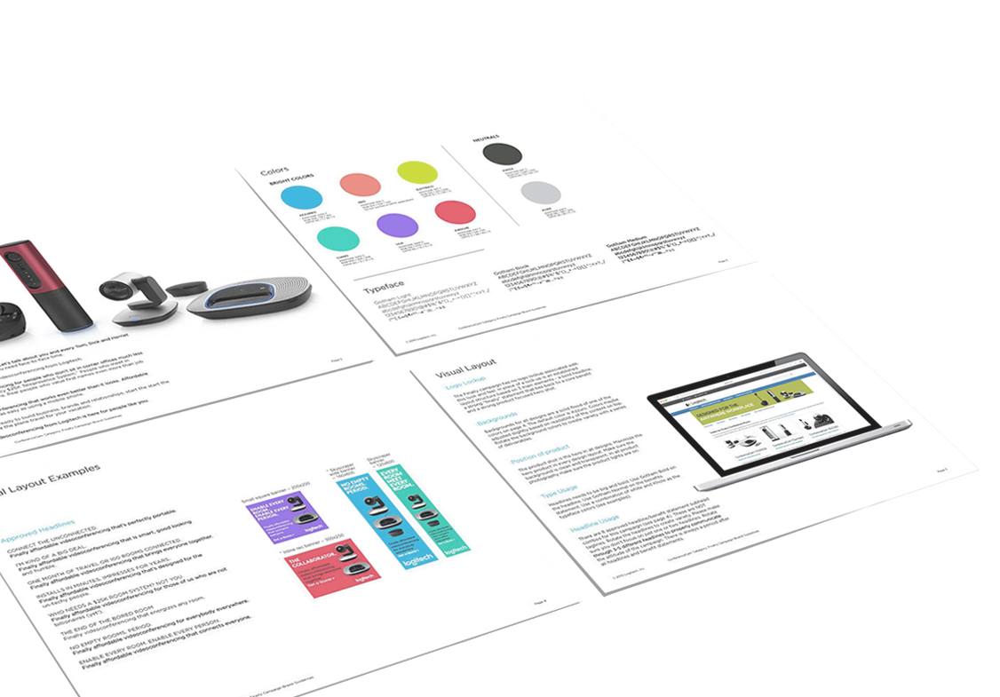

<!DOCTYPE html>
<!--  This site was created in Webflow. http://www.webflow.com  -->
<!--  Last Published: Mon Nov 27 2017 23:13:47 GMT+0000 (UTC)  -->
<html data-wf-page="5950132611e5b169565645fe" data-wf-site="5936d171eee8942f4c1b7856">
<head>
  <meta charset="utf-8">
  <title>Logitech Finally Campaign</title>
  <meta content="Logitech Finally Campaign" property="og:title">
  <meta content="width=device-width, initial-scale=1" name="viewport">
  <meta content="Webflow" name="generator">
  <link href="css/normalize.css" rel="stylesheet" type="text/css">
  <link href="css/webflow.css" rel="stylesheet" type="text/css">
  <link href="css/angel-yu.webflow.css" rel="stylesheet" type="text/css">
  <script src="https://ajax.googleapis.com/ajax/libs/webfont/1.4.7/webfont.js" type="text/javascript"></script>
  <script type="text/javascript">WebFont.load({  google: {    families: ["Roboto Slab:100,300,regular","Roboto:100,300,regular,500,700","Roboto Condensed:300,regular,700","Roboto Mono:300,regular,500","Raleway:200,300,regular"]  }});</script>
  <!-- [if lt IE 9]><script src="https://cdnjs.cloudflare.com/ajax/libs/html5shiv/3.7.3/html5shiv.min.js" type="text/javascript"></script><![endif] -->
  <script type="text/javascript">!function(o,c){var n=c.documentElement,t=" w-mod-";n.className+=t+"js",("ontouchstart"in o||o.DocumentTouch&&c instanceof DocumentTouch)&&(n.className+=t+"touch")}(window,document);</script>
  <link href="images/Angel_Favicon-02.png" rel="shortcut icon" type="image/x-icon">
  <link href="images/Angel_Favicon-01.png" rel="apple-touch-icon">
</head>
<body>
  <div class="widescreen">
    <div class="finally landingbanner projpage">
      <div class="fadeout logo"><a href="http://angelshiyaoyu.com" class="w-clearfix w-inline-block"><div class="logotext projpage">angel yu</div></a></div>
      <div class="home nav"><a href="http://angelshiyaoyu.com/about" data-ix="new-interaction" class="home link projpage resume">about /</a><a target="_blank" href="https://drive.google.com/open?id=0BzKc8r98oxcidExNdTZIMkhndjA" class="home link projpage resume">resume / </a><a href="#Portfolio" class="home link projpage resume">work /</a></div>
      <p class="finally projheading projpage">Finally <br>Campaign</p>
      <div class="projpagediv roles w-clearfix">
        <p class="projpage roles w-clearfix"><span class="projpage roles"></span><span class="bold projpage roles">Client<br xmlns="http://www.w3.org/1999/xhtml"></span>Logitech<br><br><span class="bold projpage roles">Duration</span><br>2015–2016</p>
        <p class="projpage roles w-clearfix"><span class="projpage roles"></span><span class="bold projpage roles">Team</span><br>Angel Yu / Visual Design Lead<br>Nelson Ho / Creative Director<br>Developers<br>Content Strategists<br>Logitech Brand Team</p>
        <p class="projpage roles w-clearfix"><span class="projpage roles"></span><span class="bold projpage roles">Skill Highlights</span><br>Branding<br>Visual Design<br>Digital Marketing</p>
      </div>
    </div>
    <div id="LandingBanner" class="projintro projpage">
      <p class="introtext projpage">In 2015, Logitech went through a brand renewal with remarkable interest in a growing young audience driven by personal goals and lifestyles. The challenge: how do you effectively engage with this audience while communicating the values Logitech has to offer? We repositioned Logitech&#x27;s videoconferencing products, successfully making our client the number-one player in the business.</p>
    </div>
    <div class="projpage projsection">
      <p class="designprocess projpage sectionlabels">Design Process</p>
    </div>
    <div class="projpage projsection">
      <h1 class="afterprocesslabel projpage sectiontitles">Creating Communications <br>with Impact</h1>
      <p class="para projpage toppadding">Our work initiated with strategy and content: having gained an understanding of our primary and secondary audiences, the team created audience-specific messaging and communications. The visual builds upon this work and brings everything to life through bold headlines, vibrant colors, and beautiful product shots. The tone is witty and even somewhat alarming, so the business person understands Logitech truly gets their world.</p>
      <p class="caption projpage">Brand guideline for Finally Campaign</p>
      <p class="caption projpage">Campaign guideline applied to landing page</p>
    </div>
    <div class="projpage projsection"></div>
    <div class="projpage projsection">
      <h1 class="projpage sectiontitles">Testing &amp; Optimizing </h1>
      <p class="para projpage toppadding">To optimize the performance of communications, we collected feedbacks using a variety of tools such as heat maps and A/B testing. We used heat maps to track visitor interactions of the landing page, and A/B testing to track a variety of factors, such as: If seasonality played a role in results? Which performs best: product or lifestyle imagery? What headlines resonated: pain-point or benefit based?</p></div>
    <div class="projpage projsection">
      <h1 class="projpage sectiontitles">Outcome &amp; Press</h1>
      <p class="bottompadding para projpage toppadding">Two month results:<br><br>Over 8M impressions / Banner ads performed 3X as compared to previous campaigns / Social campaign performed 4X as compared to previous campaigns / CTA, CPL, CTR and most metrics performed well above comparable campaigns / Brought the price per qualified lead down over 25% / 10x captured leads as compared to previous campaigns / Currently signed $1.6M in sales directly from this campaign (expected est. +$8M)<br><br>Read more about the success of Finally Campaign <a href="https://www.fastcompany.com/3056435/logitech-has-quietly-become-a-big-deal-in-videoconferencing" target="_blank" class="link projectpage">here</a>:<br><br><span class="link projpage"><a href="https://www.fastcompany.com/3056435/logitech-has-quietly-become-a-big-deal-in-videoconferencing" target="_blank" class="link projpage">Logitech Has Quietly Become a Big Deal on Videoconferencing</a></span><br><span class="reference">Fast Company</span><br><span class="reference"><br></span></p>
    </div>
    <a href="http://www.angelshiyaoyu.com/homeio" class="projsectionhomelinkblock w-inline-block">
      <div id="Work" class="home projsection">
        <div data-ix="scrollintoview-text" class="casestudy"><span class="home projname">home.io</span> / ux design / multimodal interaction / Service Robots / Health / Smart Home</div>
        <div data-ix="scrollintoview-text" class="homeprojdes">What does it take to trust a robot that roams in your home?</div>
      </div>
    </a>
    <a href="http://www.angelshiyaoyu.com/parkhelper" class="projsectionhomelinkblock w-inline-block">
      <div class="home projsection">
        <div data-ix="scrollintoview-text" class="casestudy"><span class="home projname">parkhelper</span> / Peer Economy / Value Creation / Community &amp; Culture / Mobile App / UX &amp; UI Design / Branding</div>
        <div data-ix="scrollintoview-text" class="homeprojdes">What values can property owners and drivers create together?</div>
      </div>
    </a>
    <a href="http://www.angelshiyaoyu.com/safenet" class="projsectionhomelinkblock w-inline-block">
      <div class="home projsection">
        <div data-ix="scrollintoview-text" class="casestudy"><span class="home projname">Safenet</span> / Design Process / Scoping / Reframe / Responsive Web</div>
        <div data-ix="scrollintoview-text" class="homeprojdes">How can we reduce stress in housing emergencies?</div>
      </div>
    </a>
    <div class="finally home projsection w-row">
      <div class="column-1 finally w-col w-col-6 w-col-medium-6 w-col-small-6">
        <h1 data-ix="scrollintoview-text" class="casestudy logitech">Logitech Campaign</h1><a href="http://angelshiyaoyu.com/finally-campaign" class="finallylink w-inline-block"></a></div>
      <div class="column-2 homesections leftborder w-col w-col-6 w-col-medium-6 w-col-small-6">
        <h1 data-ix="scrollintoview-text" class="casestudy logitech">SumTotal UI Redesign</h1><a href="http://angelshiyaoyu.com/sumtotal" class="finallylink w-inline-block"></a></div>
    </div>
    <div class="footer">
      <div class="w-row">
        <div class="column-1 w-col w-col-5">
          <div class="contactdiv w-clearfix"><a id="Contact" href="mailto:ysy_413@yahoo.com" class="contactlink w-inline-block"></a><a href="https://www.linkedin.com/in/angelshiyaoyu/" id="Contact" target="_blank" class="contactlink w-inline-block"></a><a href="https://www.flickr.com/photos/139566503@N02/albums" id="Contact" target="_blank" class="contactlink w-inline-block"></a></div>
        </div>
        <div class="column-2 w-col w-col-7">
          <div class="backtotopdiv w-clearfix"><a href="index.html" class="nextprojectbutton w-button">home /</a><a href="#LandingBanner" class="nextprojectbutton w-button">back to top /</a></div>
          <p class="copyright">© 2016 made by angel shi yao Yu</p>
        </div>
      </div>
    </div>
  </div>
  <script src="https://ajax.googleapis.com/ajax/libs/jquery/2.2.0/jquery.min.js" type="text/javascript"></script>
  <script src="js/webflow.js" type="text/javascript"></script>
  <!-- [if lte IE 9]><script src="https://cdnjs.cloudflare.com/ajax/libs/placeholders/3.0.2/placeholders.min.js"></script><![endif] -->
  <script type="text/javascript">
 $(function(){
            var lastScrollTop = 0, delta = 5;
            $(window).scroll(function(event){
               var st = $(this).scrollTop();
               if(Math.abs(lastScrollTop - st) <= delta)
                  return;
        if (st > lastScrollTop){
               // downscroll code
            $("#MagicMenu").css("top","-120px")
               .hover(
                   function() {
                       $("#MagicMenu").css("top","0px");
                   }
               )
           } else {
              // upscroll code
              $("#MagicMenu").css("top","0px");
           }
               lastScrollTop = st;
            });
        });
  </script>
</body>
</html>